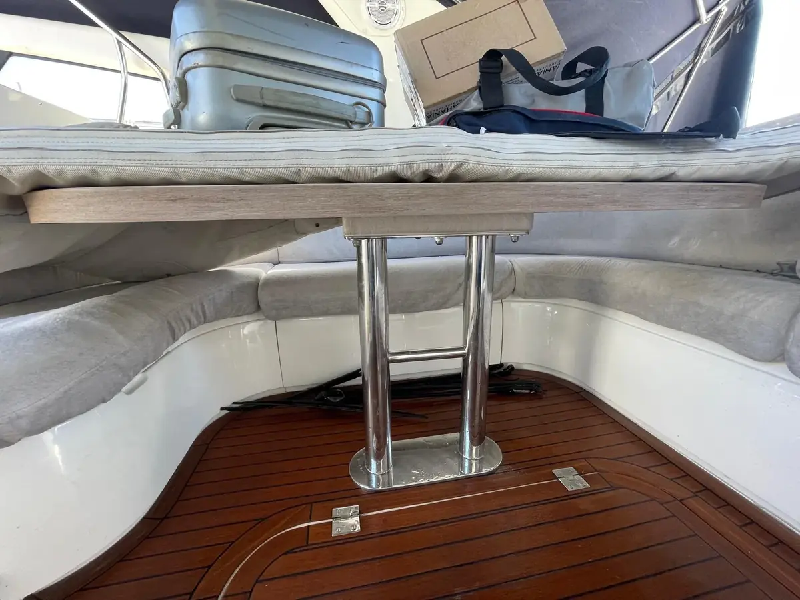
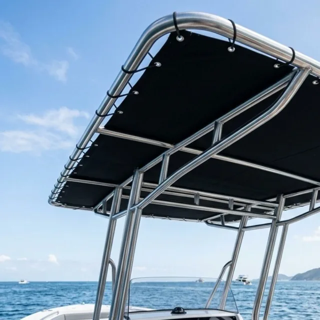

Soudure sur mesure pour yacht et bateau
Filières, mains courantes, bossoirs, taquets, arceaux : Prestige Nautic fabrique et pose chaque pièce métallique sur mesure — inox, acier, aluminium — avec une finition digne des plus beaux chantiers navals.
La soudure nautique, précision et longévité
Chaque bateau a ses besoins métalliques : équipements de pont, de cockpit et de mouillage. Nous travaillons tous les métaux adaptés au milieu marin — inox 316L, acier, aluminium — choisis selon la pièce, l'usage et le rendu souhaité. L'inox 316L reste une référence pour sa résistance à la corrosion et son aspect brillant, mais il n'est pas le seul matériau que nous mettons en œuvre.
Chez Prestige Nautic, nous fabriquons sur mesure chaque pièce dont votre bateau a besoin. De la simple platine de fixation à l'ensemble des filières d'un voilier, tout est conçu, découpé, cintré et soudé avec le procédé adapté au métal, puis poli selon la finition souhaitée — miroir ou brossée. Le résultat est une pièce unique, taillée pour votre bateau.
Métaux de qualité marine — inox 316L, alliages adaptés. Insensibles à l'eau salée, aux embruns et aux UV. Aucun entretien particulier pour conserver leur aspect.
Chaque pièce est fabriquée d'après les cotes exactes de votre bateau. Pas de compromis, pas d'adaptation : la pièce s'intègre parfaitement.
Polissage miroir pour un rendu brillant très haut de gamme, ou finition brossée satinée pour un style plus contemporain. Au choix.
Nous soudons avec tout type de procédés, choisi selon le métal et la pièce. Des cordons propres, solides et homogènes : pas de projections, pas d'inclusions, solidité maximale.
De la conception à la pose
Chaque pièce est fabriquée dans notre atelier, du relevé de cotes au polissage final, avant d'être installée sur votre bateau.
Relevé de cotes et conception
Prise des mesures directement sur le bateau, définition des formes, des diamètres de tube et des points de fixation. Un plan est établi avant toute fabrication.
Découpe et cintrage en atelier
Tronçonnage des tubes et barres métalliques aux longueurs exactes, cintrage aux angles définis, ajustage des emboîtements avant assemblage.
Soudure et assemblage
Assemblage des pièces avec le procédé de soudure adapté au métal. Les cordons sont pénétrants, homogènes et repris à la meule pour une surface lisse avant polissage.
Polissage et finition
Passage successif sur plusieurs grains de disques, jusqu'à la finition souhaitée : brossée satinée ou miroir brillant. Chaque pièce est nettoyée et protégée avant livraison.
Pose et fixation à bord
Installation de la pièce sur le bateau, perçage si nécessaire, fixation par boulons inox avec joints d'étanchéité. Vérification de la solidité et de l'alignement.
La soudure sur mesure en images
Hard-tops, plateformes de bain, tables, échelles, Starlink : le sur-mesure s'adapte à chaque bateau, quel que soit le métal.



Tout savoir sur la soudure sur mesure
Quels éléments fabriquez-vous ?
Filières, balcons, chandeliers, mains courantes, bossoirs, davits, taquets, platines, supports d'accastillage, portiques et pièces sur mesure selon votre besoin.
Quel type de soudure utilisez-vous ?
Tout type de procédés, choisi selon le métal et la pièce. Quel que soit le procédé, l'objectif reste le même : des cordons propres, résistants et adaptés à l'environnement marin.
Travaillez-vous sur pièce existante ou sur mesure ?
Les deux : remplacement ou réparation d'un élément existant, ou fabrication complète d'une pièce neuve d'après mesures et plans. C'est aussi un poste fréquent d'un refit intégral.
Quelle finition proposez-vous ?
Finition brossée ou polie miroir selon le rendu souhaité, avec un traitement de surface qui préserve la tenue du métal dans le temps.
Quels métaux résistent à l'eau de mer ?
Nous choisissons des métaux de qualité marine — inox 316L, alliages d'aluminium et aciers traités — selon la pièce, pour leur résistance à la corrosion saline.
Intervenez-vous sur mon port ?
Basés à Toulon, nous intervenons sur toute la Côte d'Azur : Hyères, Bandol, Sanary, Saint-Tropez, Cannes, Antibes, Nice et Monaco.
Un projet de soudure sur la Côte d'Azur ?
Remplacement d'un élément existant ou fabrication d'une pièce entièrement nouvelle — décrivez votre besoin et nous vous proposons un devis précis.
Demander un devis gratuit